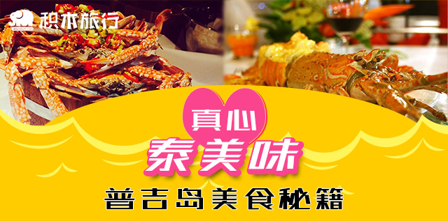
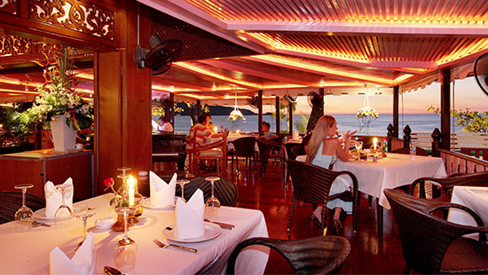
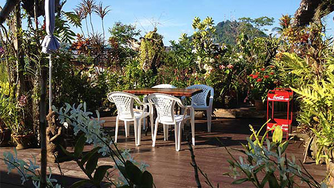
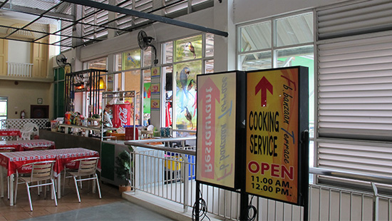
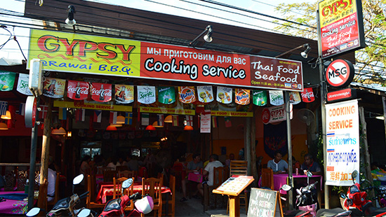
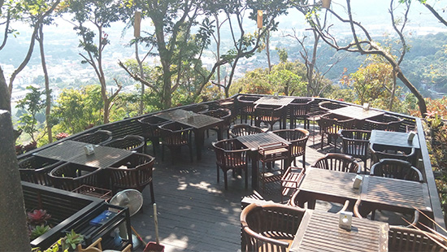
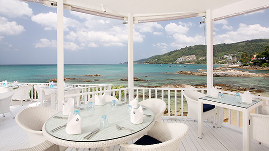
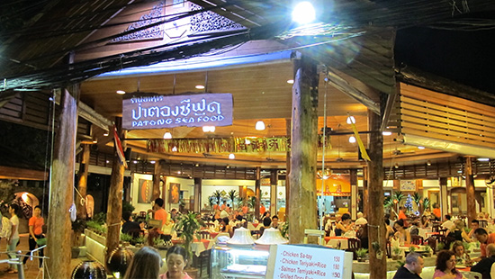
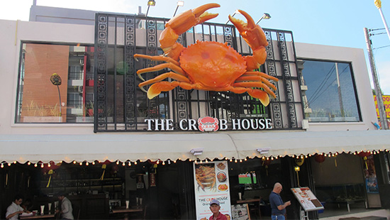

普吉岛美食秘籍
普吉岛简直是世界美食集结地，泰菜、中餐、西餐等应有尽有，尤其是极具特色的当地泰菜餐厅，毗邻海滨、装修精致、情调独特， 味道更是令人爽到翻！小编在这里为大家推荐几家在网上最受好评的餐厅，决不容错过哦！
说到最有情调，下面这两个餐厅当之无愧， 光是那独特的景致都已经秀色可餐了！

免费领取50泰铢代金券
悬崖餐厅 Baan Rim Pa
如果来普吉寻找浪漫，悬崖餐厅是你最好的选择。如果要判断你的另一半是否靠谱，就看TA是不是愿意为你找到一家如此浪漫的餐厅。悬崖餐厅是芭东最美海景餐厅，芭东海滩到卡琳湾的壮丽景色尽收眼底；以“泰国皇家料理”食谱著称，获奖无数，极富盛名。

免费领取50泰铢代金券
大自然餐厅 Natural Restaurant
大自然餐厅位于普吉镇，长期位列各攻略榜前三。华丽而淳朴的装饰风格，加上色香味俱全的泰式出品，令人流连忘返。老板娘介绍，每天都有大量慕名而来的中国游客，除了要喂饱自己之外，还要“喂饱”自己的相机。

免费领取50泰铢代金券
班赞海鲜市场Banzaan Fresh Market
班赞海鲜市场位于芭东江西冷购物商城后，市场内一楼可购买新鲜的海鲜，二楼可加工。如果中午去到班赞，推荐到your kitchen（你的厨房）加工，your kitchen长期在大众点评、穷游网、蚂蜂窝排名前三，同时，旁边的PAIPAI饮料店可购买饮料。如果是吃晚餐或宵夜，建议到二楼靠右边的FB BANZAAN加工，FB BANZAAN可营业至晚上11点。
免费领取50泰铢代金券
班赞海鲜市场二楼•PAIPAI饮料
班赞海鲜市场位于芭东江西冷购物商城后，市场内一楼可购买新鲜的海鲜，二楼可加工。如果中午去到班赞，推荐到your kitchen（你的厨房）加工，your kitchen长期在大众点评、穷游网、蚂蜂窝排名前三，同时，旁边的PAIPAI饮料店可购买饮料。如果是吃晚餐或宵夜，建议到二楼靠右边的FB BANZAAN加工，FB BANZAAN可营业至晚上11点。

免费领取50泰铢代金券
拉威海鲜市场Rawai Seafood Market
拉威海鲜市场位于普吉岛最南端，离芭东有约 30分钟车程，这里的价格和加工费几乎是班赞海鲜市场6折，实惠之余还更新鲜！这里是全普吉吃海鲜最优惠的地方，大多数餐厅的海鲜都是来这边采购的。市场的左侧是各种加工海鲜的餐厅，其中最有名的一家餐厅老板是新加坡籍的印度人，热情好客，他的餐厅同时也被Trip Advisor（到到网）重点推荐。

免费领取50泰铢代金券
Khaorang Breeze
Khaorang Breeze位于普吉镇Khao Rang 山顶，如果到了山顶观景拍照，来Khaorang Breeze与三两知己闲聊旅行趣事，沐浴下午温和的阳光，享受一杯惊艳的冰咖啡，这才是旅游的生活态度。

免费领取50泰铢代金券
Joe‘s downstairs
同属于悬崖餐厅一个集团的Joe’s downstairs，毗邻悬崖餐厅，却与悬崖餐厅具有完全不同的风格，人称白色情怀餐厅。餐厅里的格调全部以白色系为主，黑色点缀，与芭东海滩零距离接触，更像是一个建立在大海中的餐厅，在这里可以聆听到最清脆的海浪声，清新怡人。

免费领取50泰铢代金券
Patong Seafood
Patong Seafood是芭东最具有历史的老店，已经具有35年历史，位于芭东酒吧街靠海边的一侧。从选择食材到烹饪方式，都保留着最传统的方式，如果想品尝最地道最泰式的海鲜做法，那么Patong Seafood是你最好的选择。

免费领取50泰铢代金券
The Crab House
The Crab House位于芭东最佳西方酒店（BestWestern）斜对面，号称拥有全芭东海滩最大的螃蟹与龙虾，每每到了夜晚全餐厅坐无缺席，在这里可以尽情挑选最大的螃蟹，享受最新鲜美味的海鲜，这是与班赞市场截然不同的挑选海鲜方式。
关注积木旅行 微信公众号
更多旅行特价，优选旅行产品推荐